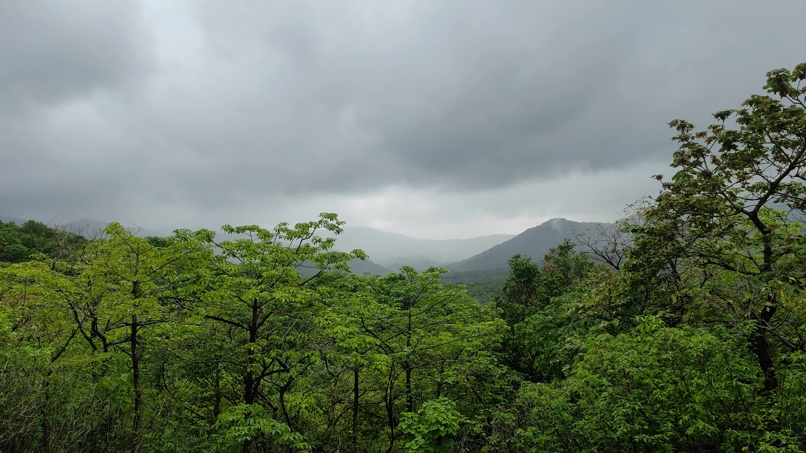

The City that we love.....
You people must be thinking why there's an entire blog about his city, right? So let me tell you i'm a middle class boy born and baught up in this city. My parents are from small village in Orissa. My father moved in here and later my mother also after their marriage. Before moving any further let me give you a geographical information about this place. So, Thane is a city in Maharastra next to Mumbai. We have river at one side, Mountain covered at another. So you can also imagine the view this city has to offer. You can roam the entire city in 30-40 minute. During rainy season you can go to trek on those beautiful mountain usually it takes 1-1.5 hours to trek all the way up and after trekking theres beautiful Waterfalls where you can rest and enjoy nature and for view you ask? One side you can see entire Thane city and another side Sanjay Gandhi National Park.  And apart from this we also have beautifull lake named "Upvan" here where you can do boat ride and the view is just as mesmerising as it can get (I'll put video and images over here). Everytime me or my friends feels low this is where we go and this is every Thanekar's Marine Lines. Two side of the place is covered with mountain and one side with skyscrapper. Dealing with Breakups? Family Issue? Deciding where to go during Weekend? Upvan's your place. During Christmas people get a big screen over here and play movies. Last Christmas it was "The Holiday" & "Holidate". Apart form this, this lake also has it's own water show everyday form 7 to 9. where they show some water show and after that stories about Thane got it's name and how it became what it is today. Not only me but everyone in Thane have the same passion towards this city. But all these are one of the reason and not the whole reason to love this city, Rest of my reason are -
- My boys
- My crush